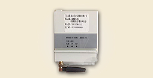
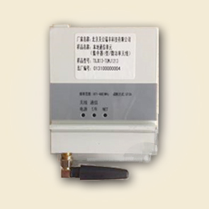
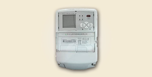
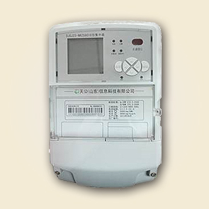
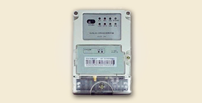
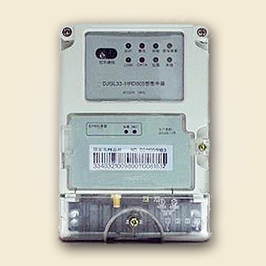
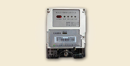
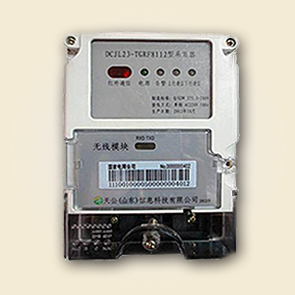
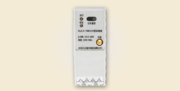
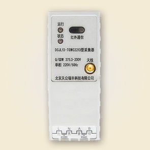

特点
（1）快速自动构建大型网络
现存的协议（如ZigBee）只能适应智能家居等小规模网络，50节点以上时通信效率及可靠性显著降低。基于TG-Inwicos协议可构建能够实现稳固通信的大型网络。它适用于大型智能配电网络及智能电表网络等基础设施。
（2）快速自我修复
因外部环境干扰网络出现故障时，每个设备都可以快速恢复或保持正常通信。
（3）可适用于有线、无线等各种网络
可适用于多种通信媒体——任何无线通信设备或有线通信设备。无须设定安装即可实现通信节点的增加和删除。在有线网络中应用AdHoc技术具有世界先进水平。
成功案例
- 青岛崂山
青岛崂山
青岛崂山地区地形复杂，山地居多，对集中器GPRS信号传输影响较大；同时由于电力载波自身的缺陷，导致抄表率受到一定影响。
TG无线抄表系统集中器上行通信为GPRS与主站进行信息交换，下行通信采用微功率无线与智能电表采集器（采集器通过485线与电表连接）进行信息交换。挂网实验覆盖到温哥华小区134栋楼，共2台集中器、2台中继器、81台采集器、1063台电能表。
特点
（1）用采集器替换成本较高的集中器，可减少集中器的使用个数。
（2）GPRS的使用成本费随之下降，减轻集抄系统的负担。
（3）实测抄成功表率可以达到100％。
（4）数据实时性、准确性高。
- 辽宁锦州
辽宁锦州
锦州地区气候多变，在现今使用的PLC通信方式中易受变频水泵或雷电影响，对于条件较差的地区抄表率约为83% 。
无线抄表系统集中器上行通信经GPRS与主站进行信息交换，下行通信以微功率无线与智能电表进行信息交换。挂网实验已完成金辉大厦、海逸半岛小区等1000台以上改造。
特点
（1）集中器到电表通过无线传输，施工运维简便。
（2）适合用电环境复杂区域。
（3）数据实时性、准确性高。
（4）无线抄表成功率可达到100％。
产品展示
- 
- 微功率无线通信模块
微功率无线通信模块

TG-Inwicos微功率无线通信模块是集中器、采集器（或电能表）设备的核心通信单元，运用深度优先算法和分布式优化路由技术，使网络健壮（鲁棒）性、自组性、自愈性好。在大规模、高密度部署场合下传输信息快，具有可靠的通信能力和抗干扰能力。
特性
支持互联互通标准协议。
全面支持DL/T 645-2007。
全面支持Q/GDW 1376.2-2013。
模块与电表通信采用串行异步。
可对无线模块的软件进行升级。
支持异常事件上报。
地址管理,信道转换,冲突避让,自动路由。
符合有关标准，便于安装维护，运行稳定。
技术参数
工作电压范围：9V-20V
信道间隔：200kHz
频率范围：470MHz～510MHz
信道数量： 100
发射功率： ≤50mW
空中速率： 9600bps
端口通信速率：2400bps
消耗功率： ≤0.2W（静态）≤0.5W（动态）
传输距离： 500～700m（可视） 1200（空旷）
环境条件： 标准工作温度为-25℃～+70℃
极限工作温度：-40℃～+85℃
工作湿度： ≤95%
设计寿命: 10年以上
- 
- Ⅰ型集中器
Ⅰ型集中器

Ⅰ型集中器是微功率无线抄表系统主节点，是上行与下行通信的网关。完成主站指令的传送、抄表数据的存储、上传。符合行业、企业相关标准和规范。
特性
支持无线自组网通信。
大容量、高可靠、便施工维护、低时延快速组网。
同地域部署多个集中器，可同时运行，网络容量大。
具有自诊断管理功能，保证集中器的正常运行。
支持本地、远程软件升级，支持断点续传功能。
实时监控电表状态、实时抄录电表指示数据、记录并存储数据，并对电表数据统计、分析。
卓越的电磁兼容性能，能适应电网复杂工作环境。
标准化结构设计，符合电力施工规范要求。
技术参数
额定电压： 3×220V/380V ±30%
工作频率： 50Hz， -6%～+2%
工作电流： 3×1.5（6）A
工作温度： -40℃～+70℃
整机功耗： 集中器消耗的视在功率≤15VA、有功功率≤10W
工作湿度： ≤95%
设计寿命： 10年以上
- 
- Ⅱ型集中器
Ⅱ型集中器

Ⅱ型集中器是微功率无线抄表系统主节点，是上行与下行通信的网关。完成主站指令的传送、抄表数据的存储、上传。符合行业、企业相关标准和规范。
特性
性能稳定，可靠，数据存储快速、准确。
支持文件压缩、断点续传与远程升级。
支持本地Ｕ盘自动升级。
支持短信测控与设置。
无线自组网通信。
卓越的电磁兼容性能，能适应电网复杂工作环境。
标准化结构设计，符合电力施工规范要求。
技术参数
额定电压：220V ±20%
工作频率：50Hz，-6%～+2%
工作温度：-40℃～+70℃
工作湿度：≤95%
时钟电池：3.6V/1200mAh
设计寿命：10年以上
日计时误差：小于0.5S
- 
- Ⅰ型采集器
Ⅰ型采集器

Ⅰ型采集器是微功率无线抄表系统终端的数据采集设备，具有功能强大、速度快、成功率高、运行稳定、便于运维等特点，是多个智能电能表信息采集的必备产品。
特性
能够按集中器设置的采集周期自动采集电能表数据。
能够分类存储数据，形成总及各费率正向有功电能示值等历史日数据，保存重点用户电能表的最近24小时整点总有功电能数据。
能够记录参数变更、抄表失败、终端停/上电等事件。
有自测试、自诊断功能，发现终端的部件工作异常有记录。
技术参数
工作电压：220V ±30%
工作频率：50Hz，-6%～+2%
工作温度：-40℃～+70℃
整机功耗：在非通信状态下，采集器消耗的视在功率≤5VA、有功功率≤3W
抄表端口：1路RS485总线，可接入1～32 路电能表
工作湿度：≤95%
设计寿命：10年以上
- 
- Ⅱ型采集器
Ⅱ型采集器

Ⅱ型采集器是适用于城镇、农村电表安装相对分散区域的居民用户较少的用电信息采集。采集器作为通信中继，直接转发集中器与电能表间的命令和数据，具有速度快、成功率高、运行稳定、便于运维等特点。
特性
支持互联互通标准协议。
实时监控电表状态、实时抄录电表数据。
数据传输准确可靠、通信能力强。
穿透和绕射能力强，开阔地域单跳覆盖半径超过1500M；具有自动中继功能。
支持本地电能表地址自动识别、匹配上报功能。
通过RS485总线最多接1～32块电表。
标准化结构设计，符合电力施工规范要求。
技术参数
工作电压：220V ±30%
工作频率：50Hz，-6%～+2%
工作温度：-40℃～+70℃
频率范围： 470MHz～510MHz
发射功率：≤50mW
抄表端口：1路RS485总线，可接入1 ～ 32 路电能表
整机功耗：在非通信状态下，采集器消耗的视在功率≤5VA、有功功率≤3W
工作湿度：≤95%
设计寿命：10年以上